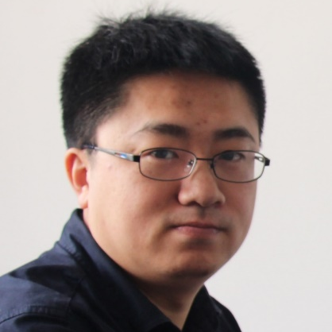

摘要: 函数纯净性分析旨在识别无副作用的函数代码。纯净函数分析是程序分析和软件调试中的重要问题，具有广泛的应用场景。 报告介绍函数纯净性分析的技术和发展，介绍近期的初步探索结果和对相关研究的一点思考。
简介:玄跻峰，武汉大学教授，博士生导师，智能化软件与服务研究所副所长。主要研究领域为软件分析与测试，包括软件测试调试、软件数据分析、服务系统优化等方向。在软件工程权威期刊会议TSE、ICSE、FSE等发表论文多篇。担任ASE、SANER等国际会议的程序委员会成员，参加一些国内外会议的track组织工作包括ICSME、ICECCS等，担任TSE、TOSEM、TKDE、TEVC等期刊审稿人。论文获得ACM SIGSOFT杰出论文奖。 入选首批中国科协青年人才托举工程，入选湖北省楚天学者；获得中国计算机学会优秀博士论文奖（CCF优博）。
摘要: 配置是用户调控软件行为的重要接口，它可以根据用户意图快速反应，适应复杂多变的运行环境。然而，随着软件规模的急剧增长，配置的数量和复杂度都在不断增加，配置在带来便利的同时，也容易引发系统问题，产生严重后果。本报告介绍了近年来在软件配置管理方面的一些思考和探索，并以配置测试为重点介绍近期的研究工作。
简介:李姗姗，国防科技大学计算机学院教授，博士生导师。主要研究方向包括代码提质、软件配置管理、软件智能化开发等，在FSE、ASE、ICSE、ISSTA等领域内重要会议和期刊发表多篇论文，获2019年国家科技进步二等奖， 2019年湖南省技术发明一等奖，2018年CCF自然科学二等奖，及军队科技进步一、二、三等奖各1次。